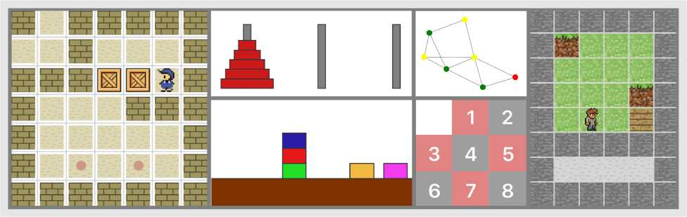
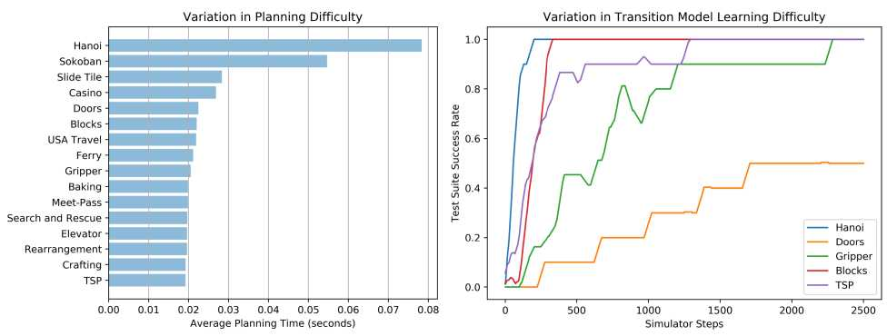

研究文献综述¶
本综述汇集了国际规划与学习研讨会（PRL）的最新研究成果，读者可通过上述链接获取更多深入内容。
背景¶
本综述涵盖以下三个核心方向：
- 广义规划综述——详见独立文档
A review of generalized planning.md（广义规划背景与发展情况） - 自动化规划中的机器学习综述——详见独立文档
A Review of Machine Learning for Automated Planning.md（自动规划发展情况，包含强化学习） - 基于深度强化学习的广义规划——详见独立文档
Generalized Planning With Deep Reinforcement Learning.md（强化学习与通用规划基本方法）
当前研究前沿¶
- PDDLGym：面向PDDL问题的Gym环境。该研究代表了强化学习与PDDL交互的正确研究方向之一。详见文献PDDLGym: Gym Environments from PDDL Problems。代码仓库：code1、code2。
广义规划概述¶
自动化规划（Automated Planning, AP）能够利用智能体及其环境的模型，在高度结构化的环境中解决复杂的推理性任务。然而，传统上由自动规划器生成的解决方案往往局限于特定的规划实例，因而缺乏泛化能力，此即**经典规划**（classical planning）的固有局限。
广义规划（generalized plan）是一种类算法的解决方案，其有效性涵盖给定的一组规划实例。
近年来，由于规划表示方面的新颖形式化体系，以及用于计算此类解决方案的新算法不断问世，上述进展揭示了广义规划技术的巨大潜力，并推动了规划理论在计算机科学各领域的广泛渗透，例如程序综合（program synthesis）、自主控制（autonomous control）、数据整理（data wrangling）及模式识别（form recognition）。本文梳理了广义规划领域的最新研究进展，并将其与现有形式化体系相关联，着重探讨自动化规划中的通用性问题，涵盖具有领域控制知识的规划以及不确定性条件下的多种规划方法等不同路径。
详细论述请参见独立文件
A review of generalized planning.md，以下仅作简要概述。
经典规划¶
*经典规划模型*是自动规划最常见的模型，基于以下假设：
- 待求解的规划任务具有有限且完全可观察的状态空间。
- 动作是确定性的，并导致瞬时状态转换。
经典规划实例的解决方案是一系列可应用的操作，这些操作将给定的初始状态转换为目标状态，即满足先前指定的一组目标条件的状态。
A classical planning frame is a tuple Φ = 〈F, A〉, where F is a set of fluents and A is a set of actions. Given a frame Φ = 〈F, A〉, a classical planning instance is a tuple P = 〈F, A, I, G〉, where I ∈ L(F) is an initial state (i.e. |I| = |F|) and G ∈ L(F) is a goal condition. 除经典规划外，PDDL还能表示更具表达力的规划模型，例如时序规划以及带有路径约束和偏好的规划。
广义规划的分类¶
可根据广义规划对*下一步待执行动作*的规范方式对其进行分类：
- 完全指定解决方案（Fully specified）：能够明确捕获下一步待执行的动作，从而解决广义规划任务中的每一个实例。程序（program）、通用策略（generalized policy）或确定性有限状态控制器（deterministic FSC）均属此类。笔者认为，非确定性图中的解图（policy）即具有确定性，可等价地表示为程序（program）。
- 非指定解决方案（Non-specified）：具备领域模型的经典规划器构成了广义规划的一种形式。此类规划极为通用，但执行机制效率低下——需针对广义规划任务中的每个实例运行经典规划器以生成完全指定的解决方案。
- 部分指定解决方案（Partially specified）：兼具上述两类要素。使用特定于领域的控制知识进行规划的不同方法均属此类，因其仍需规划器针对特定实例生成完全指定的解决方案，但借助限制可能解空间的知识加以引导。笔者认为，这等价于QNP/FOND可搜索得到"policy——>解子图"的映射。
广义规划算法的范围涵盖从纯粹的**自上而下（Top-down）（笔者理解为MyND启发式图搜索子图，或FOND-SAT全空间搜索）方法——即在广义规划空间中搜索一个能够覆盖所有输入实例的解决方案——到**自下而上（Bottom-up）（笔者理解为PRP、FF planner等从实例中学习的方法）——即为单个实例计算解决方案，然后对其进行泛化与合并，以逐步扩大广义规划的覆盖范围。
强化学习¶
（强化学习相结合）一个典型例证是在**ATARI**视频游戏中采用的以智能体为中心的行为模型，其中18种可能的行为根据视频游戏的当前状态展现出不同的效果。经典规划行为模型的扩展旨在使规划任务和规划解决方案更为紧凑且更具通用性。
**确定一组规划实例：**根据不同语言约束，存在多种形式主义来表示一组规划实例：
- **命题逻辑。**用命题逻辑表示的规划实例集的示例包括一致规划、偶然规划或POMDP规划任务。
- **一阶逻辑。**一阶逻辑约束可以包含量化变量，包括传递闭包，并表示无界状态集。对于给定的有限对象集，一阶表示形式可直接转换为命题逻辑表示形式。
- **约束规划。**可利用现成的CSP求解器来解决广义规划任务。
- **三值逻辑。**Srivastava等人利用三值逻辑进行状态抽象，以紧凑地表示无边界的具体状态集。
求解方法¶
- **自上而下的广义规划搜索方法：**在可能的广义规划空间中搜索解决方案，常通过编译为其他形式的问题求解方案来实现，例如经典规划、一致规划、CSP或Prolog程序。此类方法可受益于现成求解器的最新进展。
- **自下而上的广义规划方法：**为单个实例计算解决方案，通过泛化与合并逐步扩大覆盖范围。配备使规划适应未知案例并逐步增加覆盖范围的机制。
不同广义规划方法对比¶
| Variables | Control-flow | Execution | |
|---|---|---|---|
| Classical plan | ------ | ------ | Ground actions |
| Macro-Actions | Action parameters | ------ | Lifted actions |
| Generalized Policy | Rule parameters | Branching and loops | Lifted rules |
| DSPlanners | Existential | Branching and loops | Lifted predicates and lifted actions |
| FSCs | Quantified | Branching and loops | Derived predicates |
| Hierarchical FSCs | Quantified and parameters | Branching, loops and call stack | Derived predicates and Parameter passing |
| Programs | Quantified and parameters | Branching, loops and call stack | Derived predicates and Parameter passing |
自动化规划中的机器学习综述¶
自动化规划（AP）是人工智能的一个分支，致力于研究执行给定任务的有序行动集合的计算综合。AP于20世纪50年代末期兴起，是对状态空间搜索、定理证明及控制理论研究的成果，旨在应对机器人技术与自动演绎领域的实际需求。斯坦福研究院的问题求解器STRIPS（Fikes and Nilsson, 1971）发展为控制自主机器人Shakey的规划组件（Nilsson, 1984），这一历程完美诠释了上述影响力的相互作用。从Shakey时代至今，AP领域已催生了规划任务的公认表示标准及其高效求解算法（Ghallab et al., 2004）。
详细论述请参见独立文件
A Review of Machine Learning for Automated Planning.md，以下仅作简要概述。
四项关键要素¶
- **知识表示。**首先界定学习知识类型，包括动作模型与搜索控制知识；其次决定表示语言（通常为谓词逻辑）与特征空间。
- **经验获取。**学习样本可由规划系统自主收集或外部智能体提供。随机探索常常导致状态和动作空间欠采样。
- **学习算法。**归纳学习、分析学习或混合归纳-分析学习均可用于从经验中捕获模式。
- **所学知识的利用。**自动化系统如何从习得知识中受益。需配备在知识存在缺陷时仍能鲁棒地进行规划的机制。
AP模型四类范式¶
| 模型 | 特征 | 实施方式 | |
|---|---|---|---|
| 长处 | 弱点 | ||
| 确定性效果+完全状态可观察性 | 学习复杂性可控；高效规划算法；完整覆盖 | 表现力差 | LIVE（Shen and Simon, 1989），EXPO（Gil, 1992），OBSERVER（Wang, 1994） |
| 确定性效果+部分状态可观察性 | 完整覆盖学习示例 | 表现力差；规划算法低效 | ARMS（Yang等, 2007），（Amir and Chang, 2008），（Mourao等, 2008），LOCM（Cresswell等, 2009） |
| 概率性效果+完全状态可观察性 | 表现力丰富；高效规划算法 | 在线学习尚未实现 | （Oates and Cohen, 1996），TRAIL（Benson, 1997），LOPE（Garcia-Martinez and Borrajo, 2000），PELA（Jimenez等, 2008） |
| 概率性效果+部分状态可观察性 | 表现力丰富 | 规划与学习复杂性高 | （Yoon and Kambhampati, 2007） |
学习搜索控制知识¶
学习AP搜索控制知识的四种不同方法：宏动作（Macro-actions）、广义策略（Generalized Policies）、广义启发式函数（Generalized Heuristics）及层次分解方法（Decomposition Methods）。
| 模型 | 特征 | 实施方式 | |
|---|---|---|---|
| 长处 | 弱点 | ||
| Macro-actions | 对错误知识鲁棒性强；适用于不同规划器 | Utility problem | REFLECT, MORRIS, MacroFF, Marvin, Newton等 |
| Generalized Policies | 标准关系分类算法 | 整合不同搜索算法需工程投入 | Minton, PRIAR, HAMLET, Khardon, Martin & Geffner等 |
| Generalized Heuristics | 标准关系回归算法；易于集成不同搜索算法 | 可读性差 | Yoon等, Xu等 |
| Decomposition Methods | 表现力丰富 | 尚未实现全自动学习 | CAMEL, HDL, HTNMAKER |
前沿实现：广义策略学习¶
本文选取两篇近期文献，介绍当前主要研究方法：
- 基于深度强化学习的广义规划：通过编码特征工程后，采用类似于Q-learning的决策动作网络进行策略学习（state→action），不依赖于视觉表示或由规划算法生成的成功计划，而是通过深度强化学习以试错方式直接从PDDL表示中学习问题求解。详见独立文件
Generalized Planning With Deep Reinforcement Learning.md。 - PDDLGym：面向PDDL问题的Gym环境：利用规划器求解PDDL的框架，将成为打通AI规划与强化学习之间的桥梁。详见下文。
PDDLGym：面向PDDL问题的Gym环境¶
摘要¶
本文介绍PDDLGym，这是一个能够从PDDL领域和问题文件自动构建OpenAI Gym环境的框架。PDDLGym中的观测与动作均具有关系性（relational）特征，这使得该框架特别适用于关系强化学习与关系性顺序决策的研究。PDDLGym还可作为通用框架，通过简洁且熟悉的规范语言快速构建多样化基准。本文讨论了其设计决策与实现细节，并根据规划难度和模型学习难度两方面，阐述了20种内置环境之间的经验差异。期望PDDLGym能够促进强化学习社区（Gym的发源地）与AI规划社区（PDDL的发源地）之间的桥梁构建。
PDDLGym是一个将Gym与PDDL元素有机结合的开源框架。**具体而言，PDDLGym是一个Python库，可根据PDDL领域文件和问题文件自动创建Gym环境。**该库的代码仓库位于https://github.com/tomsilver/pddlgym。
与Gym类似，PDDLGym支持智能体与环境之间进行周期性的闭环交互。智能体从环境接收观测结果并执行动作，重复此循环直至片段结束。如PDDL的核心理念，PDDLGym从根本上具有关系性：观测结果为对象上的基例化关系集（例如，on(plate, table)），动作为与对象一同基例化的模板（例如，pick(plate)）。因此，PDDLGym特别适用于关系学习与顺序决策研究。
强化学习中所采用的Gym API定义了智能体与环境之间的严格边界。具体而言，智能体*仅*通过执行动作和接收观测来与环境交互。环境执行step函数，该函数根据智能体赋予的动作推进状态；step函数定义了环境的转移模型。类似地，PDDL领域通过其算子对转移模型进行编码。然而，在典型使用场景中，PDDL被理解为完全存在于智能体的"思维"之中，随后由独立的过程负责将规划转化为智能体可在世界中执行的行动。
PDDLGym打破了这一惯例：在PDDLGym中，PDDL领域与问题文件牢固地位于智能体-环境边界的环境一侧。环境利用PDDL文件实现step功能，在给定动作的情况下推进状态。因此，将PDDLGym理解为对PDDL用途的一种重新诠释更为恰当。

图1：PDDLGym中实现的部分环境示例。从左至右依次为：推箱子（Sokoban）、河内塔（Hanoi）、积木世界（Blocksworld）、旅行推销员问题（TSP）、滑动拼图（Sliding Puzzle）及手工制作（Crafting）。

图2：PDDLGym代码示例。（A）PDDL领域文件中的一个算子；（B）一段简洁的PDDL问题文件摘录；（C）在注册名称为"PDDLEnvBlocks-v0"的环境后，仅需数行Python代码即可与PDDLGym环境进行交互。
PDDLGym具有三个主要用途：
- 促进关系领域中顺序决策的多样化基准创建。
- 搭建强化学习与规划研究之间的桥梁。
- 推动关系领域中顺序决策的研究进展。
设计实现¶
Gym API通过三种基本方法将环境定义为Python类：
- init：用于初始化环境；
- reset：开始新的片段并返回观测值；
- step：接收智能体的动作、推进当前状态，并返回观测值、奖励、表示片段是否完成的布尔值及可选的调试信息。
此外，需在Gym环境中实现**action_space**（表示可能动作的空间）和**observation_space**（表示可能观测的空间）。
初始化和重置环境¶
PDDLGym环境由PDDL领域文件和PDDL问题文件列表共同参数化。为便于研究，每个PDDLGym环境均与该环境的*测试*版本相关联，其中领域文件保持不变，而问题文件则有所差异（例如，可对更复杂的规划任务进行编码，以衡量泛化能力）。在环境初始化期间，所有PDDL文件均被解析为Python对象。为此，本文采用自定义PDDL解析器。调用reset时，将随机选择一个训练问题实例。
为方便起见，reset还返回（在调试信息中）指向当前片段的PDDL领域文件和问题文件的路径。这使得用户可以便捷地使用符号规划器并在环境中执行生成的规划。
对于每种环境，智能体针对25级基线执行随机策略。观测到的状态转移将被用于学习转移模型，随后将该模型应用于一系列测试问题的规划求解。所报告的成功求解测试问题的比例被作为学习到的转移模型性能的衡量指标。为学习转移模型，采用一阶逻辑决策树（FOLDT）学习方法。
实施step方法¶
PDDLGym环境的step方法接收一个动作，更新环境状态，并返回观测值、奖励、完成标志及调试信息。为确定状态更新，PDDLGym检查在给定当前状态下，该动作是否满足某个PDDL算子的前提条件。
**前提条件满足检查**并非平凡操作；非自由参数（non-free parameters）必须完成绑定。本文实现了两个推理后端来执行此项检查：
- 第一个是基于类型化SLD解析的Python实现，当查询仅涉及合取时，此为默认选项。
- 第二个是SWI Prolog接口封装，使其能够处理涉及析取和量词的更为复杂的前提条件。后者运行速度较前者为慢，但具有更强的通用性。
当没有任何算子前提满足给定动作时，状态默认保持不变。PDDLGym中的奖励为稀疏的二元奖励。具体而言，当达到问题目标时，奖励值为1.0，否则为0.0。当达到目标时，完成标志（done）为True，否则为False（实际应用中通常采用最大片段长度作为终止条件）。
实验¶
若基础PDDL领域具有概率效应（如PPDDL），step方法将对此进行适当解析，并根据给定的概率分布选择一种效应。

PDDLGym环境之间的差异：PDDLGym中内置的PDDL领域与问题在规划难度和模型学习难度方面存在显著差异。对于图中所示的方法，其他领域（包括Baking、Depot和Sokoban）对于本文采用的学习方法而言较为困难：FOLDT学习无法在合理时间内找到适配数据的模型。当然，模型学习的难度因学习方法和探索策略的不同而存在很大差异。本文在此实施简单策略以展示上述结果，而这些未来的研究方向恰恰是PDDLGym所期望促进的探索路径。
综上所述，PDDLGym是一个开源的Python框架，能够根据PDDL领域与问题文件自动创建OpenAI Gym环境。实验结果表明，内置环境之间在规划难度与学习难度方面存在相当大的差异。
参考¶
- Silver, T., & Chitnis, R. (2020). PDDLGym: Gym Environments from PDDL Problems. arXiv preprint arXiv:2002.06432.
- Geffner, H., & Bonet, B. (2013). A Concise Introduction to Models and Methods for Automated Planning. Morgan & Claypool Publishers.
- Ghallab, M., Nau, D., & Traverso, P. (2016). Automated planning and acting. Cambridge University Press.
- Jimenez, S., Segovia-Aguas, J., & Jonsson, A. (2019). A review of generalized planning. The Knowledge Engineering Review, 34.